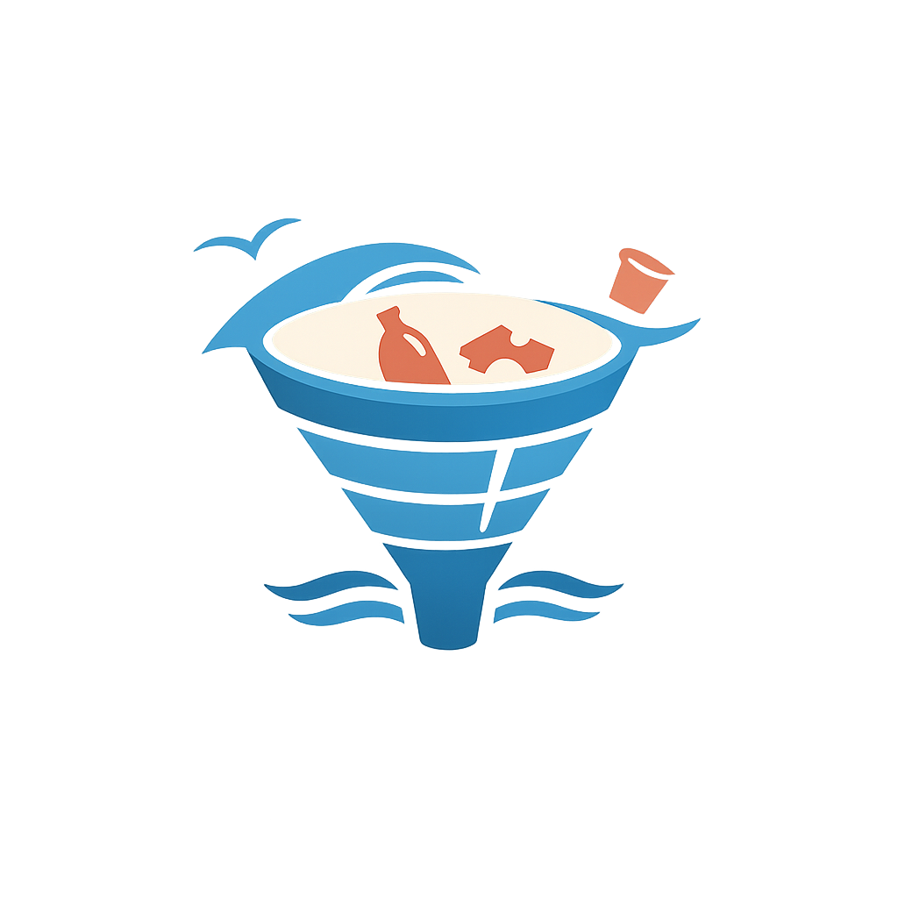

A poluição por plásticos nos oceanos é um dos maiores problemas ambientais. Todos os anos, milhões de toneladas de plástico acabam no mar, vindas principalmente de lixo descartado de forma inadequada em cidades, rios e zonas costeiras.
A quantidade de lixo que é jogado no mar é um numero muito grande, e que acaba afetando grande parte da vida marinha e do proprio ambiente ao redor, então precisamos tentar encontrar uma forma de reduzir este lixo e acabar com que joga ele